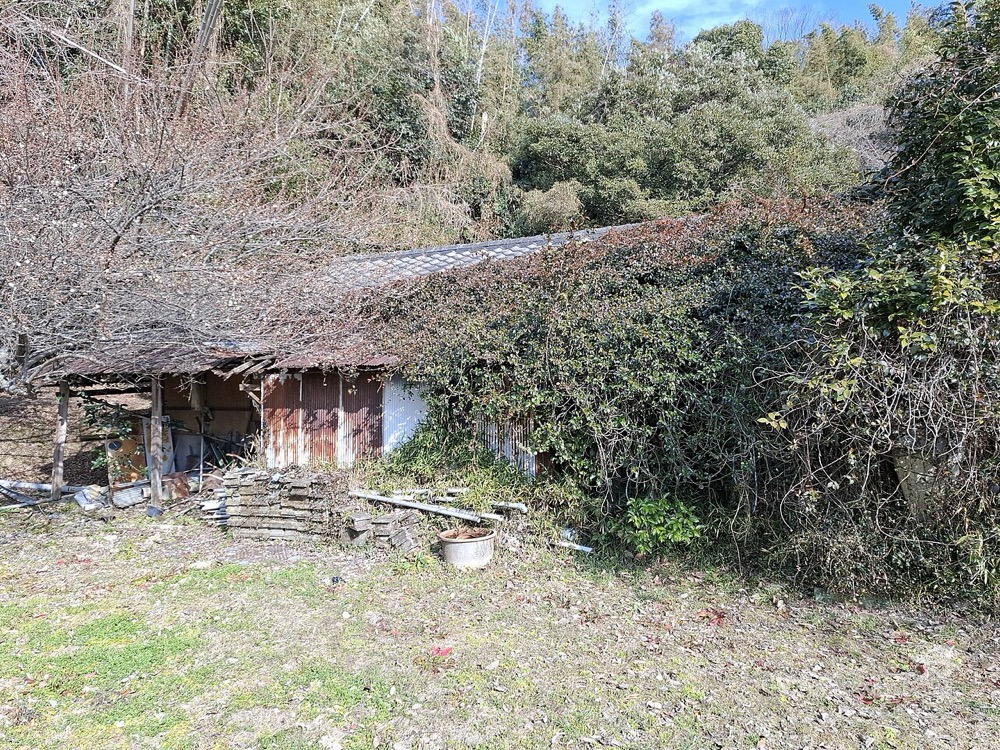
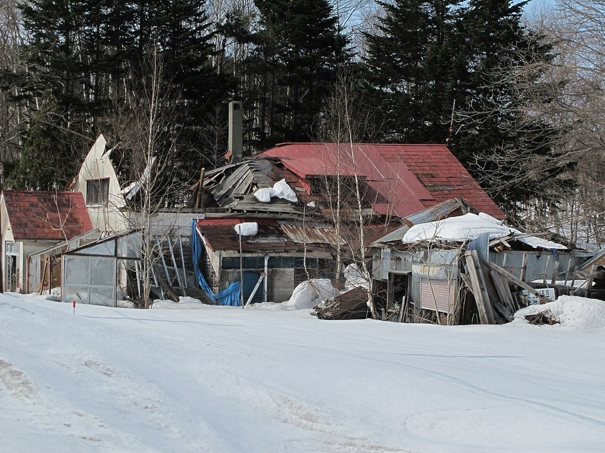

相続などで使われなくなった地方の戸建を数百万円で買い取り、改修して賃貸または売却する事業である。仕入れは金融機関・司法書士・自治体からの紹介で行い、物件を担保に地銀と信用金庫から借りて戸数を増やす。
| 項目 | 数値 | 時点・出典 |
|---|---|---|
| 空き家総数 | 900.2万戸 | 2023年 空き家率13.8%1 |
| 賃貸・売却用及び二次的住宅を除く空き家 | 385.6万戸 | 2023年1 |
| うち一戸建 | 285.1万戸 | 2023年 一戸建空き家の80.9%1 |
| 使用目的のない空き家の見込み | 470万戸 | 2030年 国の見込み2 |
| 買取再販の成約戸数 | 52,800戸 | 2024年 推計3 |
| 同 予測 | 62,700戸 → 75,600戸 | 2025年 → 2030年3 |
米国の戸建賃貸の最大手Invitation Homesは2025年末に86,192戸を保有し、2025年の売上は約27.3億ドルである9。戸建を大量に買って賃貸する事業は、米国では上場企業の規模で成立している。ただし米国の対象は人口が増える都市圏の住宅であり、日本の地方空き家とは需要の条件が異なる。
| 変化 | 年と数値 |
|---|---|
| 人口と相続 | 空き家は2018年の848.9万戸から2023年の900.2万戸へ51.3万戸増えた1。使用目的のない空き家は1998年の182万戸から2018年の349万戸へ1.9倍になり、2030年は470万戸と見込まれる2 |
| 空家法の改正 | 2023年6月14日に改正法が公布され、6か月以内に施行された2。管理不全空家が勧告を受けると住宅用地特例が外れる。特例は200㎡以下の部分の評価額を1/6にするものである4 |
| 国の目標 | 施行後5年間で、市区町村の取組により管理や除却がされる管理不全空家と特定空家を15万物件とする目標がある2 |
| 相続登記 | 2024年4月に相続登記の申請が義務になった6。所有者が特定しやすくなり、買取の交渉先が明確になる |
| 仲介報酬 | 2024年7月1日から、800万円以下の物件の仲介報酬の上限が33万円になった7。低額物件を仲介する事業者の採算が改善した |
| 価格 | 新築住宅の価格上昇により、改修済み中古戸建の需要が増えた。カチタスの2026年3月期の単体販売件数は前期比14.7%増の6,422件である5 |
| 企業 | 規模 | 位置 |
|---|---|---|
| カチタス | 売上1,518億円・営業利益183億円 2026年3月期8。単体販売6,422件5 | 地方の中古戸建の買取再販で最大手 |
| マンション買取再販の各社 | 今回は規模を確認していない | 都市部のマンションが中心で、地方戸建とは仕入れ先が異なる |
| 不動産特定共同事業者 | 小規模事業は資本金1,000万円で登録でき、出資総額は1億円まで10 | 空き家再生を小口の出資で行う事業者がある |
カチタス単体の6,422件は、2024年の買取再販52,800戸3の約12%に当たる。年度と集計範囲が異なるため参考値である。マンションを除く地方戸建に限れば、カチタスの比率はさらに高い。
| 用途 | 金額 | 内容 |
|---|---|---|
| 物件取得 | 1,200万円 | 1戸200万円で6戸 |
| 改修 | 1,500万円 | 1戸250万円で6戸。残りの改修費は融資で賄う |
| 人件費 | 800万円 | 仕入れ営業1名と工事管理1名の12か月分。創業者は無給とする |
| 宅建業の免許・保証協会・事務所 | 200万円 | 宅地建物取引業の開業費用 |
| 予備 | 300万円 | 瑕疵の補修と空室期間 |
| 月 | 行うこと | 検証すること |
|---|---|---|
| 1〜2 | 対象地域を1県に絞る。宅建業の免許を取得し、地銀・信用金庫・司法書士に仕入れ紹介を依頼する | 紹介が月に何件生成されるか |
| 3〜5 | 最初の3戸を取得し改修する。工務店3社に同じ仕様で見積を出させる | 1戸あたりの改修費と工期 |
| 6〜8 | 3戸を賃貸に出し、残り3戸を取得する | 賃料・入居までの日数・入居者の属性 |
| 9〜10 | 賃貸中の物件を担保に地銀へ融資を申し込む | 担保評価額と融資の掛け目 |
| 11〜12 | 1〜2戸を売却して、賃貸と売却の利回りを比較する | 売却価格と保有利回りの差 |
1年目の売上目標は売却と賃料の合計で0.4億円から0.6億円である。最大の検証点は、賃貸中の空き家を地銀が担保として評価するかどうかである。
| 段階 | 手段 | 金融機関 | 担保・根拠 |
|---|---|---|---|
| 1年目 | 創業融資 | 日本政策金融公庫、信用保証協会付きの地銀融資 | 事業計画と自己資金 |
| 2〜3年目 | 物件ごとの担保融資 | 地銀、信用金庫 | 取得した物件と賃料収入。掛け目は取得改修費の70〜80%を仮定 |
| 3〜5年目 | 小口の出資 | 小規模不動産特定共同事業として自ら登録する | 資本金1,000万円で登録でき、出資総額は1億円まで10 |
| 5〜10年目 | 保有物件の束での借入と証券化 | メガバンク、信託銀行 | 数百戸の賃料収入をまとめて担保にする |
| 随時 | 補助金 | 自治体の空き家改修補助 | 補助の有無と金額は自治体ごとに異なる。今回は個別に確認していない |
物件そのものが担保になるため、資金源は型Bに当たる。制約は、地方の戸建の担保評価が低いことである。担保評価が取得改修費を下回れば、自己資金の回収が遅れ、戸数の増加が止まる。


| 年目 | 売上 | 営業利益 | 累計投資 | 借入残高 |
|---|---|---|---|---|
| 1 | 0.6億円 | 0.05億円 | 0.6億円 | 0.3億円 |
| 2 | 2.0億円 | 0.2億円 | 2.0億円 | 1.5億円 |
| 3 | 5億円 | 0.6億円 | 5億円 | 4億円 |
| 5 | 20億円 | 2.4億円 | 18億円 | 14億円 |
| 7 | 60億円 | 7.2億円 | 50億円 | 40億円 |
| 10 | 200億円 | 24億円 | 150億円 | 110億円 |
| 年目 | 売上 | 営業利益 | 累計投資 | 借入残高 |
|---|---|---|---|---|
| 1 | 0.4億円 | -0.1億円 | 0.5億円 | 0.2億円 |
| 2 | 1.0億円 | 0.05億円 | 1.2億円 | 0.8億円 |
| 3 | 2億円 | 0.15億円 | 2.5億円 | 1.8億円 |
| 5 | 6億円 | 0.5億円 | 7億円 | 5億円 |
| 7 | 12億円 | 1.0億円 | 14億円 | 10億円 |
| 10 | 30億円 | 2.4億円 | 30億円 | 22億円 |
買取再販で10年以内に首位に届く道筋はない。カチタスは単体だけで年6,422件を販売し5、売上は1,518億円である8。楽観の10年目でもカチタスの現在の売上の13%にとどまる。カチタスも同じ期間に成長を続ける。
止まる位置は、特定の県での地方戸建の再生の上位である。全国の首位を狙える領域は、地方の空き家を賃貸で保有する戸数に限られる。この領域は全国統計が確認できず、市場が1,000億円以上かどうかを判定できない。賃料月6万円で1,000億円の年間賃料を得るには約14万戸が必要である。これはInvitation Homesの保有86,192戸9を上回る。
結論として、10年で日本一には届かない。到達できる規模は売上数十億円から200億円であり、地域の有力企業の位置で止まる可能性が高い。
不動産は国ごとに法制度と金融が異なり、事業の型を輸出しにくい。グローバルなインフラになる可能性は低い。
| # | 基準 | 判定 | 根拠 |
|---|---|---|---|
| 1 | 50年、魂を燃やし続けられるか | 創業者が判定 | |
| 2 | 10年以内に、国内市場規模1,000億円以上の市場でシェア1位になれるか | × | 買取再販の首位は売上1,518億円で成長中であり、楽観でも10年目は200億円である。 |
| 3 | 4,000万円で始められ、融資で伸ばせるか | ○ | 4,000万円で6戸から始められ、物件を担保に地銀と信用金庫から借りられる。 |
| 4 | グローバルなインフラになり得るか | × | 不動産は国ごとに法制度と金融が異なり、事業の型を輸出しにくい。 |
| 5 | 営業力が最初の売上に直接結びつくか | △ | 金融機関と司法書士からの仕入れ紹介には営業が結びつくが、販売先は個人で大企業営業の経験は使いにくい。 |
| 6 | 同じビジョンを共有する仲間を誘える事業か | 創業者が判定 | |
| 7 | 本業が早く現金を生み、返済と出資の原資になるか | ○ | 売却型は6〜9か月で現金化でき、首位企業の営業利益率は12.0%である。 |
| 8 | 投資先を束ねる群の中核になれるか | △ | 工務店や解体業者は束ねられるが、周辺事業の規模は小さく地域に限られる。 |
| 9 | 成長の資金源がA・B・Cのどれに当たるか | B | 取得した物件と賃料収入を担保に借りる。 |